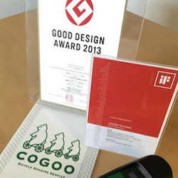

| 横浜国立大学 | 千葉大学 | 京都大学 |
| 大阪大学 | 一橋大学 | 九州大学 |
 自転車増台記念！ サイクリングイベント |
 #cogooなう キャンペーン企画会議 |
 週に3回 自転車メンテナンス実施 |
 COGOO導入！ チラシで登録促進会 |
 Merry Christmas サンタ帽子でCOGOOアピール |
 COGOO登録会 手作りボードと自転車 |
|  2013年9月 グッドデザイン賞受賞 日本最大のデザインアワードであるグッドデザイン賞にて、GOOD DESIGN AWARD 2013を受賞 |
 2014年3月 IF DESIGN AWARD受賞 プロダクトデザイン部門にて「2014 iFプロダクトデザイン賞」を受賞 |
 2014年6月 Silver Lion受賞 COGOO BICYCLEのCM「SADDLE BLOSSOMS」が世界3大広告賞のカンヌライオンズ 国際クリエイティビティ・フェスティバルのPR部門でSilver Lionを受賞 |
|
プロモーションムービー SADDLE BLOSSOMS |
横浜国立大学でのSADDLE BLOSSOMS企画 |
プロモーションムービー TURNTABLE RIDER |